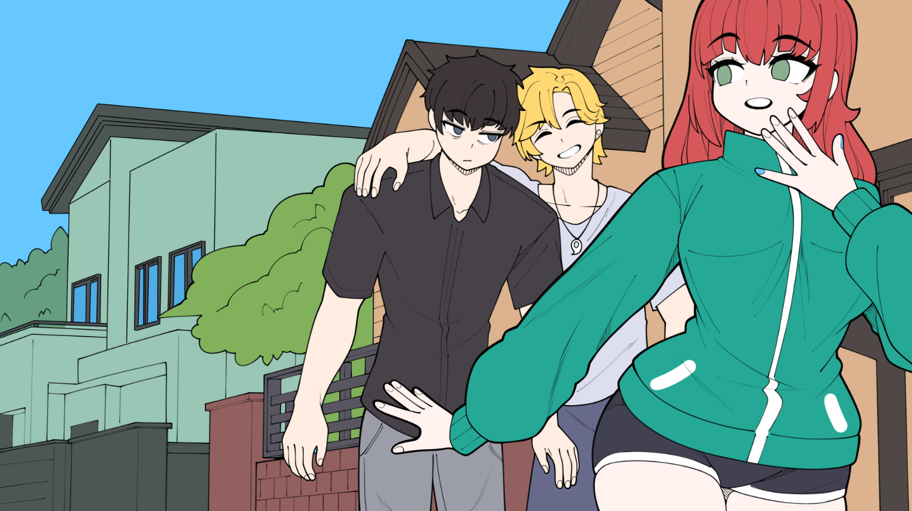
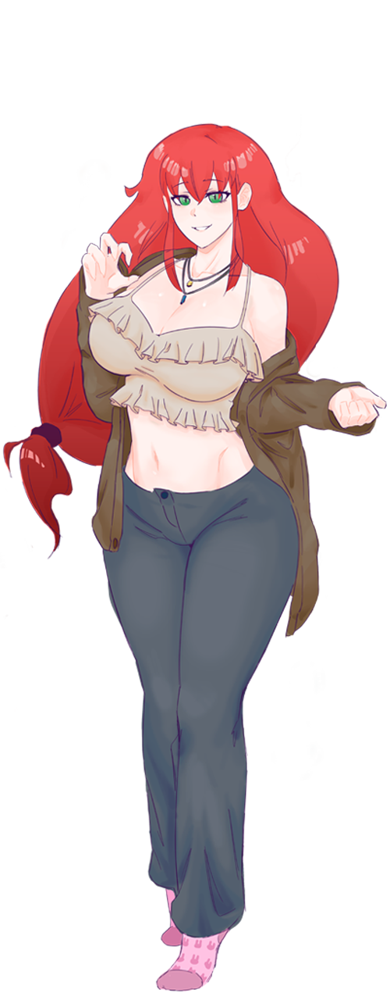
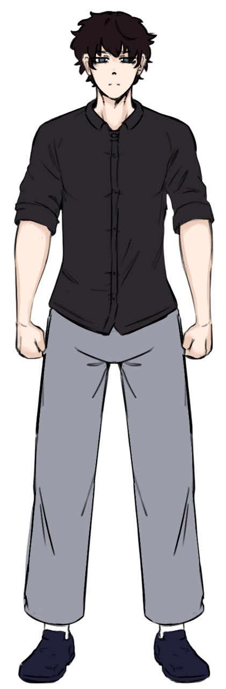
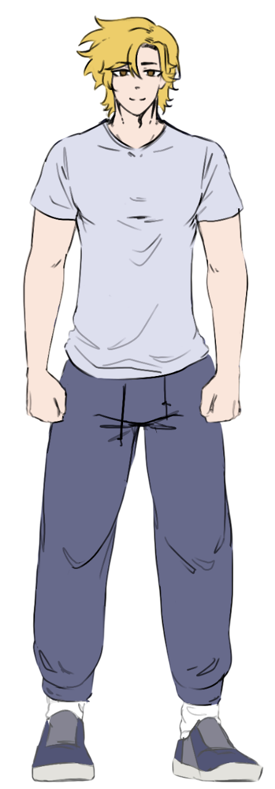
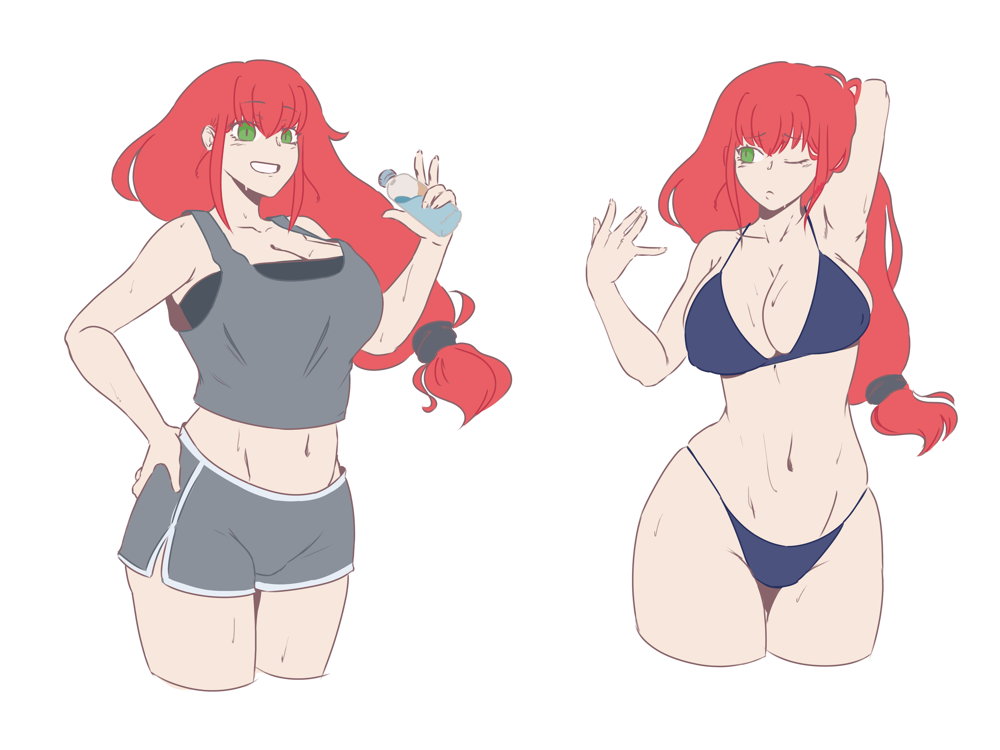
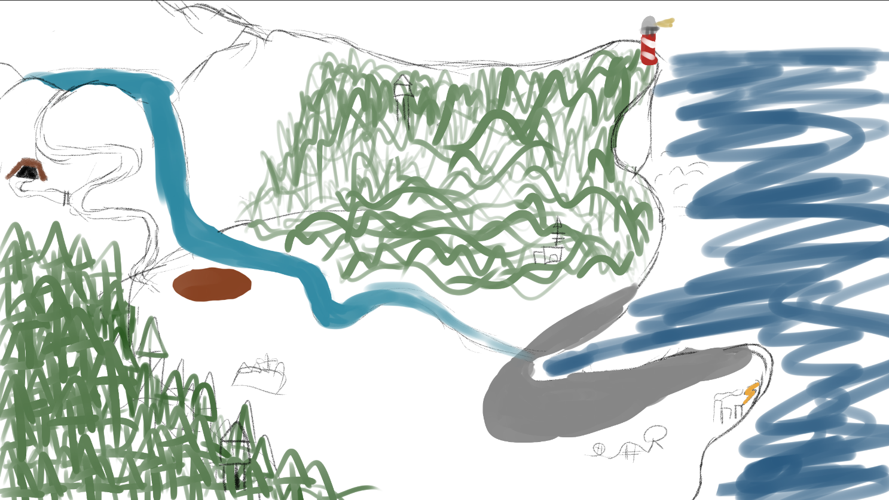
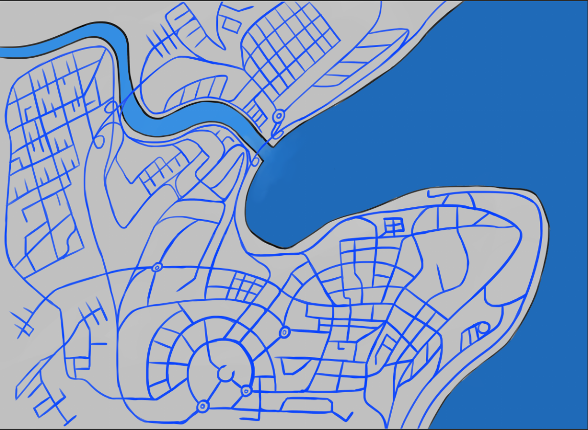
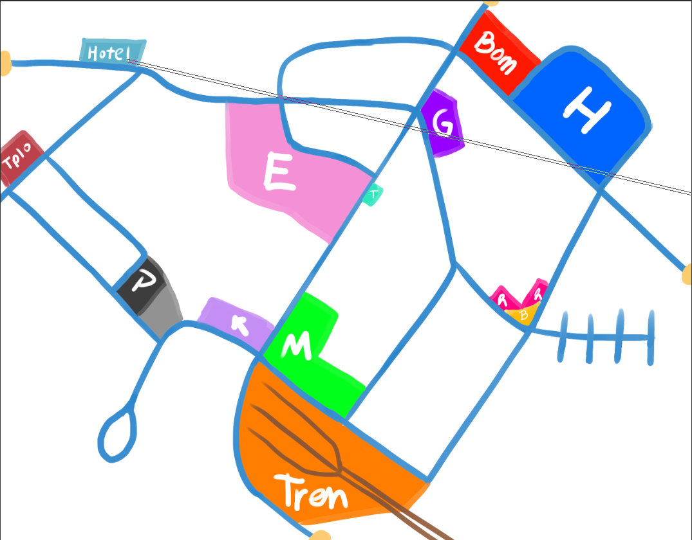

DEADLINE
Sinopsis
Nozomi, una chica normal, tendrá que afrontar los problemas que su padre científico le dejará como resultado de sus experimentos con el "tiempo", provocando que su aventura esté llena de altibajos junto a sus fieles amigos y caballeros, Koji y Masao, quienes harán todo lo posible por ayudarla a llegar al final de la historia y poder quedarse con ella.
Próximamente en:
Mecánicas Principales
- Exploración libre: A pie o en la bicicleta de Nozomi, recorre y explora todo el mundo.
- Personalización Detallada: De la habitación y bicicleta de Nozomi, como la personalización de su vestuario y peinados.
- Sistema de vínculos: Con Koji y Masao, mejora tu relación con ellos para desbloquear nuevas cosas.
- Misiones y Decisiones: Misiones principales y secundarias con decisiones que afectan el mundo.

Nozomi Miyashita

Koji Ishida

Masao Takeuchi
Próximamente
Nuevos personajes serán revelados pronto. ¡Mantente al tanto de nuestras redes para no perderte ninguna noticia!
Galería de Arte





